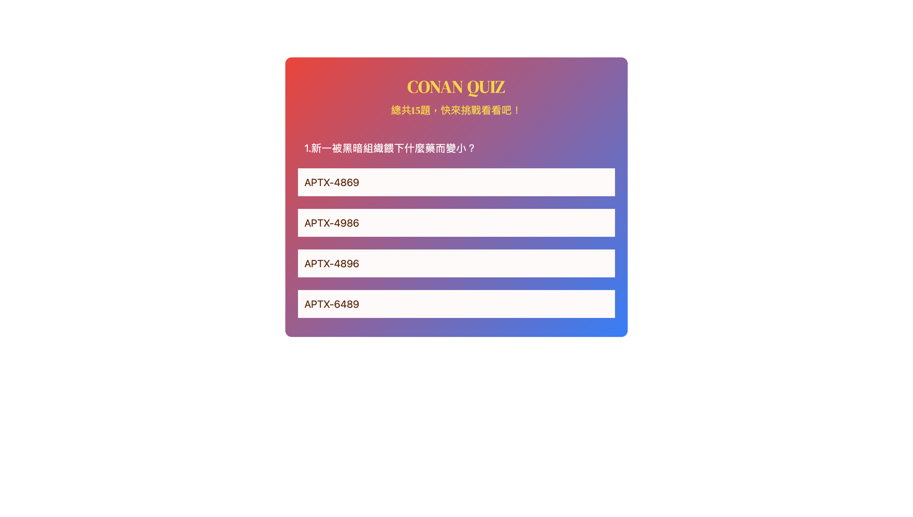

works

instagram網頁版切版練習
作品介紹
- 此為模仿instagram網頁版首頁之切版練習
- 係以HTML、CSS、JavaScript為技術完成之
- 此練習作品暫時非響應式網頁
- logo來源：https://logos-download.com/wp-content/uploads/2016/03/Instagram_Logo_2016.png
- icon來源：google font icon- https://fonts.google.com/icons
在此作品我學到......
- 套用google font icon
- overlay之寫法
- 當按鈕套用google icon，如果文字因此沒有辦法水平置中之解決辦法
- 按下按鈕開啟div，點畫面上任一處（除被開啟之div外）能關閉該div之方法
- 按下按鈕改變按鈕上之文字之方法
- 調整元素position寫法

TO-DO LIST
作品介紹
- 此為清單，可以新增記事、刪除記事，完成記事則可點擊記事內容
- 係以HTML、CSS、JavaScript為技術完成之
在此作品我學到......
- 套用google font字體
- 釐清magin、padding之差別，並且了解何謂box-sizing
- 用css畫出一個勾勾
- 偽元素（:before）之觀念。此練習中並無使用:after，不過也亦同釐清了
- 新增與刪除文本節點之方法
- 如何讓清單項目可以顯示為已完成之方法
- 了解classList之常見用法
- 套用google font icon
- inline-block之用法，以及和block、inline之差別

Quiz-名偵探柯南小測驗
作品介紹
- 使用技術包含：HTML、CSS、JavaScript
- 此練習具響應式效果
在此作品我學到......
learning source